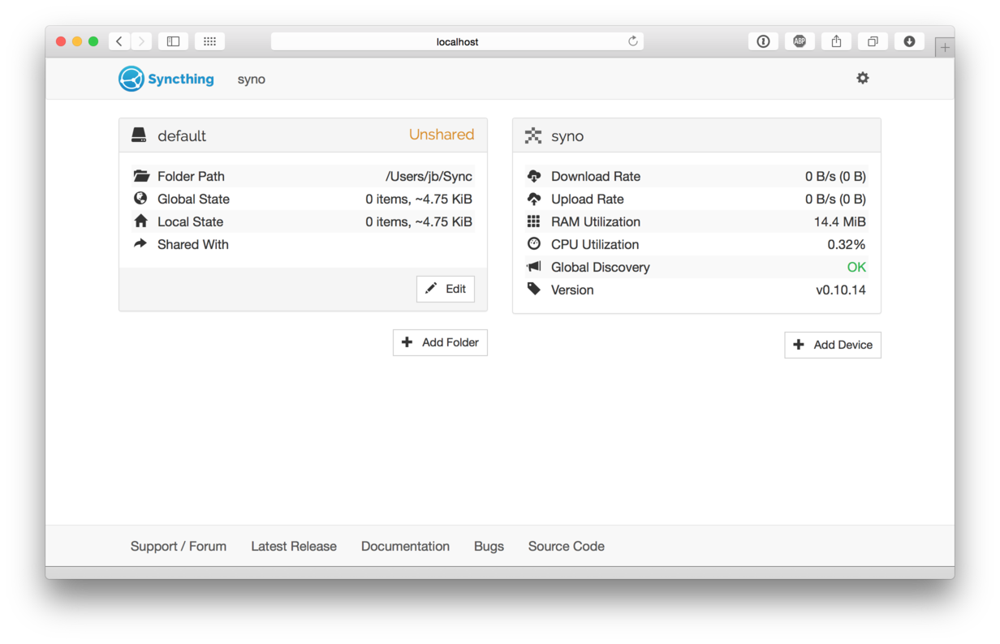
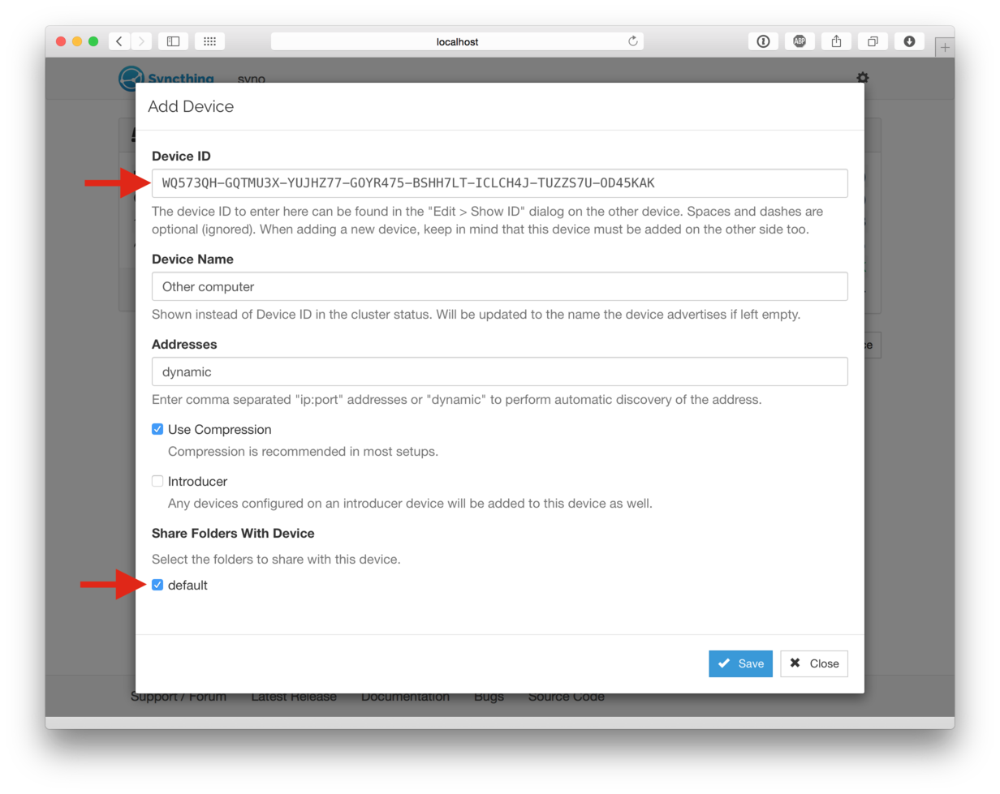
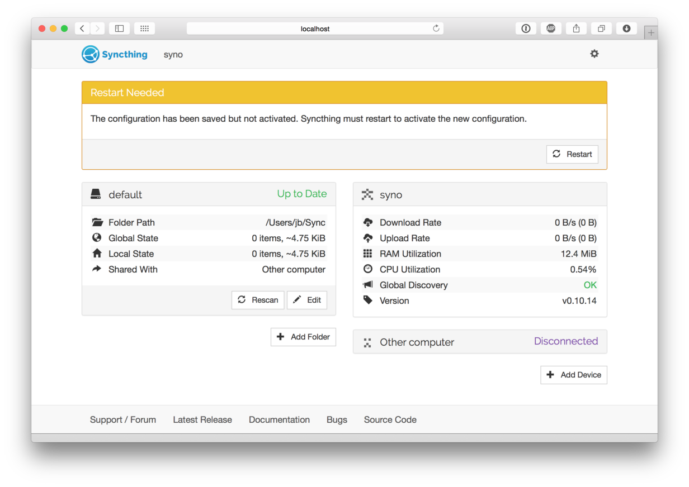
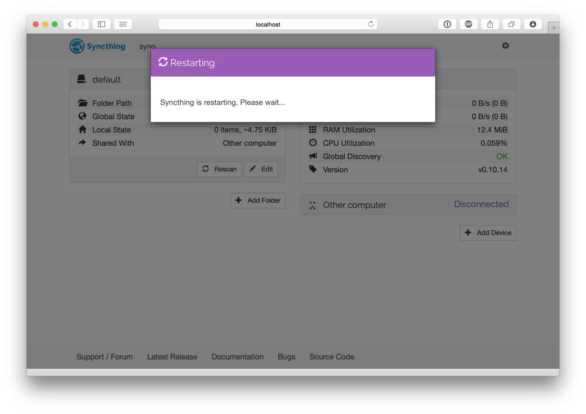
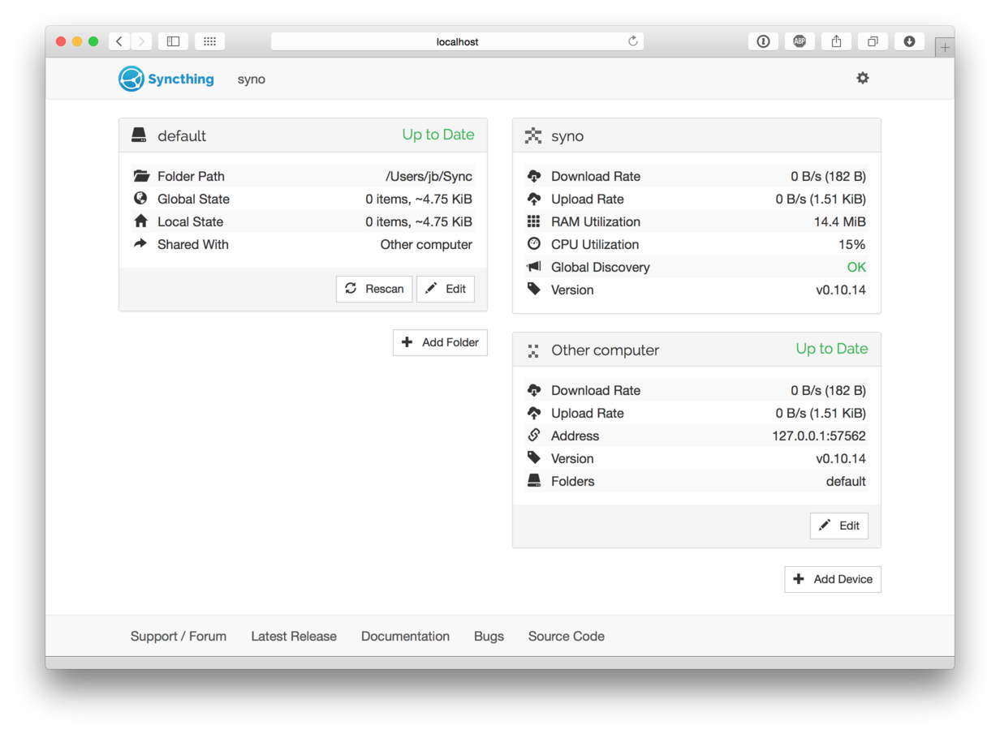

開始使用
For this guide let's assume you have two machines between which you want to synchronise files. In keeping with Syncthing terminology they are going to be called "devices" in the rest of the documentation. The "local device" is the one you are configuring, viewing status for, etc, while the "remote device" is the other machine.
The best way to follow this guide is to do the install on both machines and configure them in parallel. If both machines aren't accessible simultaneously that's fine, the results will just be a little less immediately obvious.
A film version of this transcript is available on YouTube (contributed by @theincogtion). This video shows how to install Syncthing on Ubuntu/Debian/Mint using PPA, also available in German. This video shows how to install Syncthing on Windows, also available in German
Installing
We suggest you have a look at the 社群貢獻 which let you pick a flavor of Syncthing that best fits your scenario. For example, if you are interested in a cross-platform GUI application you can check out Syncthing-GTK. The community has also developed Windows, Android and many more specific flavors that help you run Syncthing on your devices. Currently all community flavors run the same Syncthing core underneath, so don't worry about changing your flavor at a later point in time. The remainder of this page will explain how to set up two devices with the core Syncthing flavor.
Syncthing
Grab the latest release of Syncthing for your operating system and unpack
it. There will be a binary called syncthing (or syncthing.exe on
Windows). Start this in whatever way you are most comfortable with;
double-clicking should work in any graphical environment, but I'll use the
terminal to better illustrate what happens. At first start Syncthing will
generate a configuration file, some keys and then start the admin GUI in your
browser. Something like the following will be printed in the terminal:
$ syncthing
[monitor] 15:56:58 INFO: Starting syncthing
15:56:58 INFO: Generating RSA key and certificate for syncthing...
[ANSMX] 15:57:05 INFO: syncthing v0.10.14 (go1.4 darwin-amd64 default) jb@syno...
[ANSMX] 15:57:05 INFO: My ID: ANSMXYD-E6CF3JC-TCVPYGF-GXJPHSJ-MKUXBUQ-ZSPOKXH-...
[ANSMX] 15:57:05 INFO: No config file; starting with empty defaults
[ANSMX] 15:57:05 INFO: Edit gs1/config.xml to taste or use the GUI
[ANSMX] 15:57:05 INFO: Starting web GUI on http://127.0.0.1:8384/
[ANSMX] 15:57:05 INFO: Loading HTTPS certificate: open gs1/https-cert.pem: no ...
[ANSMX] 15:57:05 INFO: Creating new HTTPS certificate
[ANSMX] 15:57:05 INFO: Generating RSA key and certificate for syno...
[ANSMX] 15:57:07 INFO: Starting UPnP discovery...
[ANSMX] 15:57:13 INFO: UPnP discovery complete (found 0 devices).
[ANSMX] 15:57:13 INFO: Starting local discovery announcements
[ANSMX] 15:57:13 INFO: Local discovery over IPv4 unavailable
[ANSMX] 15:57:13 INFO: Starting global discovery announcements
[ANSMX] 15:57:13 OK: Ready to synchronize default (read-write)
[ANSMX] 15:57:13 INFO: Device ANSMXYD-E6CF3JC-TCVPYGF-GXJPHSJ-MKUXBUQ-ZSPOKXH-...
[ANSMX] 15:57:13 INFO: Completed initial scan (rw) of folder default
At this point Syncthing will also have set up a folder called
default for you, in a directory called Sync in your home
directory. You can use this as a starting point, then remove it or add
more folders later.
Configuring
The admin GUI starts automatically and remains available on
https://localhost:8384/. Cookies are essential to the correct functioning of the GUI; please ensure your browser accepts them. It should look something like this:

On the left is the list of "folders", or directories to synchronize. You
can see the default folder was created for you, and it's currently
marked "Unshared" since it's not yet shared with any other device. On
the right is the list of devices. Currently there is only one device:
the computer you are running this on.
For Syncthing to be able to synchronize files with another device, it must be told about that device. This is accomplished by exchanging "device IDs". A device ID is a unique, cryptographically-secure identifier that is generated as part of the key generation the first time you start Syncthing. It is printed in the log above, and you can see it in the web GUI by selecting the "gear menu" (top right) and "Show ID".
Two devices will only connect and talk to each other if they are both configured with each other's device ID. Since the configuration must be mutual for a connection to happen, device IDs don't need to be kept secret. They are essentially part of the public key.
To get your two devices to talk to each other click "Add Device" at the bottom right on both, and enter the device ID of the other side. You should also select the folder(s) that you want to share. The device name is optional and purely cosmetic. It can be changed later if required.

Once you click "Save" the new device will appear on right side of the GUI (although disconnected) and a prompt will be shown to indicate the need for a restart.

Syncthing needs to be restarted for some configuration changes to take effect, such as sharing folders with new devices. When you click "Restart" Syncthing will first restart:

...and then connect to the new device after a minute or so. Remember to repeat this step for the other device.

At this point the two devices share an empty directory. Adding files to the shared directory on either device will synchronize those files to the other side. Each device scans for changes every 60 seconds, so changes can take a little over a minute to propagate to the other side, although some contributed wrappers may include file system "watcher" features. The rescan interval can be changed for each folder by clicking on a folder, clicking "Edit" and entering a new value for "Rescan Interval".
Good luck and have fun! There is more documentation and if you run into trouble feel free to post a question in the support forum. If you have problems getting devices to connect, first take a look at 防火牆設定, then look at any error messages in the GUI or on the console. Don't forget that configuration changes will not be reflected instantly - give Syncthing a little time, especially after a restart.